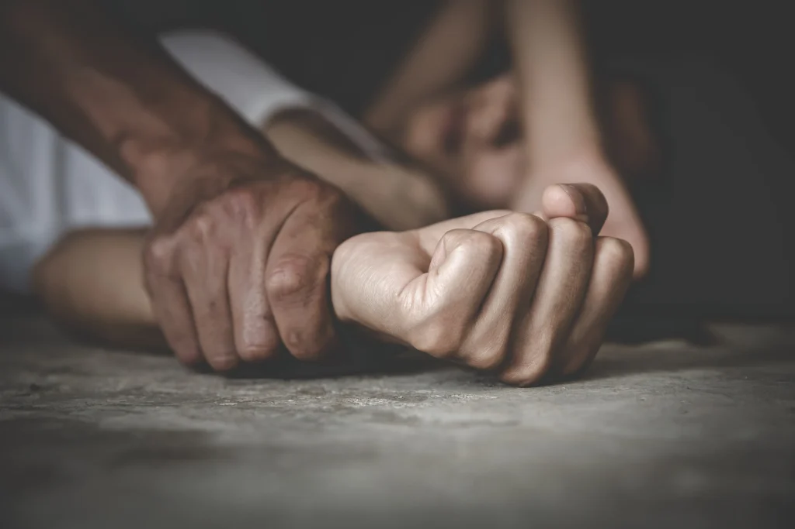
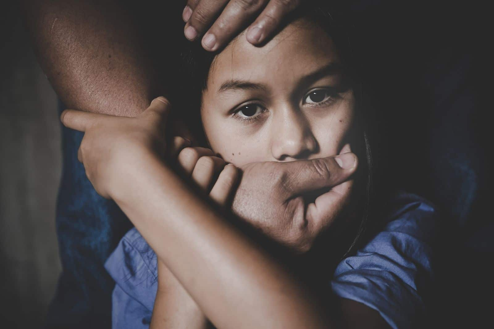

By Chiara Renee B. Gevero - Created on November 26, 2024
Compulsive sexual behavior, also known as hypersexuality, is characterized by uncontrollable sexual thoughts and impulses that may lead to harmful actions. In cases of parental rape, this compulsive behavior can manifest in deeply harmful ways, resulting in one of the most egregious forms of sexual violence incestuous abuse. However, it’s important to note that while compulsive behavior may be a contributing factor, it does not absolve offenders of accountability for their actions. According to RAINN, millions of women in the United States have experienced rape, and young people aged 12 to 34 are the most vulnerable. Tragically, a significant portion of these cases involve perpetrators who are family members, including parents. Parental rape not only shatters the physical safety of children but also destroys the emotional and psychological foundation of trust essential for their development. This form of abuse is often hidden due to shame, fear, and societal stigma, leaving many victims without support. To address the high rates of sexual violence in our culture, we must recognize the unique dynamics of familial abuse and create systems that empower victims to speak out and seek justice.
This is a story that was experienced by David Pelicot and his sister Caroline Darian. According to The Guardian, “This is a harrowing story of betrayal, abuse, and resilience centered on a French family devastated by the crimes of Dominique Pelicot, a retired estate agent. Over nearly a decade, Pelicot drugged his wife, Gisèle, and facilitated her repeated sexual assault by dozens of men, capturing these acts on video. His actions were discovered following an unrelated arrest for voyeurism, unveiling a trove of evidence on his computer. Gisèle, now a symbol of strength, has insisted on a public trial to raise awareness about drug-facilitated sexual violence. Her children, meanwhile, grapple with profound betrayal and shock. They recount years of unsettling signs they misinterpreted, such as Gisèle's absences, which they initially attributed to health issues, and Dominique's discomfort when others accessed his computer. The trial has also exposed other abuses by Dominique, including secretly photographing his daughter, daughters-in-law, and pregnant wife of his son. One of his daughters claims to have been drugged and abused, though physical evidence is lacking, leaving her with unresolved trauma. As the family confronts the scope of Dominique's crimes, they are united in their resolve to break societal silence around abuse. Gisèle and her children advocate for awareness and justice, turning their pain into a powerful message about the importance of speaking out and supporting survivors.”
Parental rape is a horrifying issue that has persisted in society for far too long, often hidden behind walls of silence and denial. Rape, at its core, involves forcing someone into non-consensual sexual acts, and it can happen to individuals of any gender. However, when the perpetrator is a parent, the crime becomes even more devastating. Parental rape occurs when a parent forces their child into sexual acts, exploiting their authority and the child's vulnerability. Children in such situations are powerless to resist, leaving them trapped in fear and unable to seek help. The consequences are severe and long-lasting, often leaving victims with deep psychological scars and, in some cases, leading to early pregnancies in girls. This issue must be taken seriously as it can occur at any time and in any place, even within the supposed sanctuary of a home. It is essential to raise awareness and educate children about self-defense and recognizing abuse from an early age. Empowering children with knowledge and tools to protect themselves can be a critical step in addressing this hidden crisis. The causes and effects of parental rape can have devastating consequences on a child's well-being, both in the short and long term. Victims of such abuse often suffer from hypersexuality, childhood trauma, and psychological disorders, as well as a deep fear of judgment or retaliation that silences them. Hypersexuality is one potential consequence, where children exposed to sexual abuse develop behaviors involving excessive or inappropriate sexual activity as they grow older. These behaviors may include masturbation, sexual arousal at an early age, reliance on pornography, or forming multiple sexual relationships. These effects may not appear immediately but gradually manifest as the child matures, potentially leading to harmful patterns of behavior. Childhood trauma is another significant consequence. It leaves deep emotional scars and leads to behavioral reactions such as anxiety, depression, a fear of being left alone, or inappropriate sexual knowledge for their age. These reactions make it difficult for the child to function normally, eroding their sense of safety and self-worth. The fear of judgment or retaliation further compounds the issue, often silencing victims. For example, a child whose abuse becomes publicly known may face gossip and judgment, with others dismissing their experience or attributing blame to their perceived weaknesses. This societal stigma isolates victims further and prevents them from seeking help. Adding to the severity of the issue is the failure of child protection systems to adequately safeguard minors. Weak child protection laws are a critical barrier. In many countries, legislation lacks clear definitions of abuse or fails to cover all forms of harm, including emotional abuse and online exploitation. Even where laws exist, enforcement is often insufficient due to corruption, lack of funding, or poorly trained personnel. This lack of accountability allows perpetrators to escape justice. Another pressing issue is the lack of accessible resources for victims and families. Underfunded social services lead to overwhelmed workers who cannot provide adequate support to children in need. In rural or low-income areas, access to child protection services is further hindered by transportation challenges and the concentration of resources in urban centers. A lack of education and awareness compounds the problem—families and communities often do not recognize abuse or know how to seek help, leaving many cases unreported. The consequences of these systemic failures are far-reaching. Weak laws and inadequate resources perpetuate a cycle of abuse, where children grow up in dangerous environments and are at risk of repeating harmful behaviors in adulthood if they do not receive the help they need. Addressing these challenges is crucial to breaking this cycle and protecting vulnerable children from ongoing harm.
One of the most horrific and underreported crimes, parental rape destroys children's lives and leaves them with lifelong wounds. For these victims, the home a location that ought to represent security and affection becomes a site of trauma and betrayal. The repercussions, which range from mental health issues and social isolation to hypersexuality and childhood trauma, highlight the serious harm that such abuse does. However, the misuse itself is not the only issue. These crimes continue because of systemic flaws, such as lax enforcement of child protection laws, a lack of readily available resources, and weak regulations. This starts a vicious cycle of abuse that keeps victims silent and makes them more likely to repeat harmful behaviors as adults. Urgent action is needed to address this situation on several fronts. To safeguard children who are at risk and to hold offenders accountable, laws must be reinforced and upheld. Campaigns for education and awareness are necessary in communities to dispel the stigma associated with abuse and promote reporting. Above all, we need to give survivors strong support networks and the tools they need to recover and start over. Parental rape is a social disaster rather than merely a family one. We can make it so that no child has to live in terror of those who are supposed to protect them by banding together to end the silence, address structural obstacles, and give victims more power. Understanding, empathy, and a steadfast dedication to justice are the first steps in combating this covert crime.